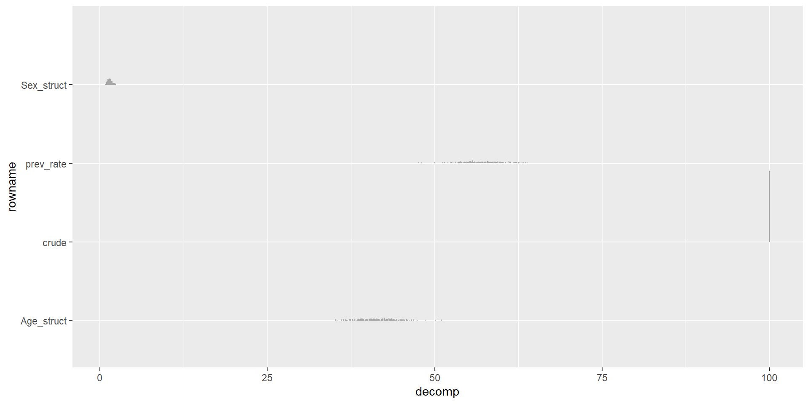
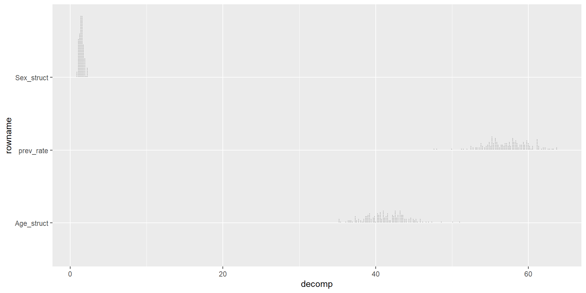
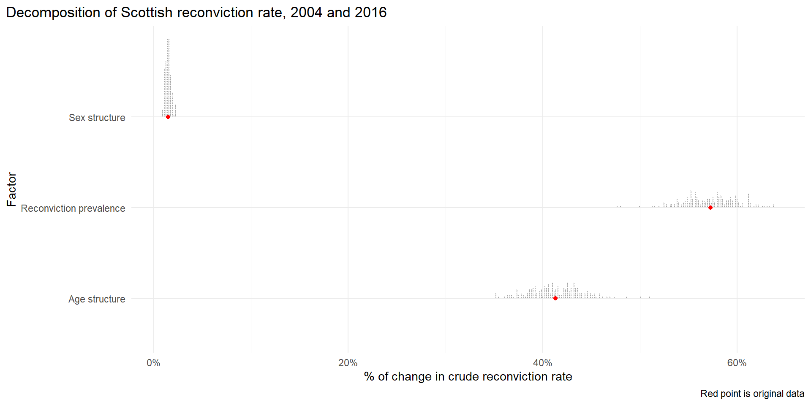

# Bootstrap sampling
# A tibble: 200 × 2
splits id
<list> <chr>
1 <split [89957/32972]> Bootstrap001
2 <split [89957/32992]> Bootstrap002
3 <split [89957/33239]> Bootstrap003
4 <split [89957/33113]> Bootstrap004
5 <split [89957/32932]> Bootstrap005
6 <split [89957/33149]> Bootstrap006
7 <split [89957/33307]> Bootstrap007
8 <split [89957/33076]> Bootstrap008
9 <split [89957/32863]> Bootstrap009
10 <split [89957/33139]> Bootstrap010
# ℹ 190 more rowsStandardization and decomposition: A conceptual introduction
Whence uncertainty?
- The Das Gupta method doesn’t really have a concept of an error term - all results are calculate algebraically (Das Gupta 1993)
- But we might still want to quantify uncertainty in the results of a standardization and decomposition
- Bootstrapping is a general purpose way to achieve this (Carsey and Harden 2014)
Bootstrapping
- Bootstrapping is a resampling method where you create an empirical distribution of estimates of your quantity of interest through resampling
- It is, as it were, a dumb strategy - it doesn’t try to be clever, just reshuffles your data a bunch and re-runs your analysis on each resampled dataset
- Computer go brrr
Bootstrapping
- There are different ways to achieve this
- We adopt a non-parametric bootstrap where you sample with replacement from the original data and re-run the analysis on each bootstrap draw
- The way we do it rate decomposition essentially expands the data out to unit-level data, re-samples, then aggregates back up
- Pros: this will always* work, makes no assumptions about distributions or anything
- Cons: the amount of memory required scales with the number of units, your computer might run out of memory/catch on fire
Bootstrapping in practice
- First create a function to essentially “uncount” data into individual level data (where nrow = size of total population), then re-sample with replacement, then aggregate back up to the level of the original data
- Standardize and decompose each resampled dataset
Bootstrapping in practice
- ‘Explode’ the aggregate data
- Resample the exploded data 200 times (NB more is always better)
- Aggregate each of the 200 datasets
- Standardize and decompose 200 times
- Visualize the results
Bootstrapping in practice: Exploding the data
Bootstrapping: 2. Resampling
- Now we have an ‘individual’ level dataset for our reconviction cohorts we can resample from them with replacement
- We use functions from the
{rsample}package to do this in a memory efficient way - Because bootstrapping uses random number generation we need to set the seed before starting so our results are reproducible
- We also need to set the number of draws. We’ll use 200 for speed; but more is always better
Boostrapping: 2. Resampling
- We now have 200 of… something
Bootstrapping: 3. Aggregating
- Now we can convert these memory-efficient, individual level resamples from our data to aggregate data ready to standardize and decompose
- To do this we need to use R’s programming functions to iterate over each bootstrap resample and aggregate them
- We will write a helper function to do this
Writing an R function
- Functions in R let you easily re-run code
- If you have not written an R function before you might want to check out the Functions chapter in R for Data Science (Wickham, Çetinkaya-Rundel, and Grolemund 2023)
Bootstrapping: 3. Aggregating
Bootstrapping: 3. Aggregating
- Now we have our helper function we can apply it to each bootstrap draw
- We use the
mapfunction from the{purrr}package - Jenny Bryan has written the definitive guide to iteration with
{purrr} - The basic intuition is each bootstrap draw is a row of our
draws_2004_2016dataframe, and we want to aggregate each one - In other words, we want to
mapthe aggregation to each of the bootstrap draws
Bootstrapping: 3. Aggregating
Bootstrapping: 3. Aggregating
# Bootstrap sampling
# A tibble: 200 × 3
splits id agg_data
<list> <chr> <list>
1 <split [89957/32972]> Bootstrap001 <gropd_df [20 × 7]>
2 <split [89957/32992]> Bootstrap002 <gropd_df [20 × 7]>
3 <split [89957/33239]> Bootstrap003 <gropd_df [20 × 7]>
4 <split [89957/33113]> Bootstrap004 <gropd_df [20 × 7]>
5 <split [89957/32932]> Bootstrap005 <gropd_df [20 × 7]>
6 <split [89957/33149]> Bootstrap006 <gropd_df [20 × 7]>
7 <split [89957/33307]> Bootstrap007 <gropd_df [20 × 7]>
8 <split [89957/33076]> Bootstrap008 <gropd_df [20 × 7]>
9 <split [89957/32863]> Bootstrap009 <gropd_df [20 × 7]>
10 <split [89957/33139]> Bootstrap010 <gropd_df [20 × 7]>
# ℹ 190 more rowsBootstrapping: 3. Aggregating
- Look at the first aggregated draw
# A tibble: 20 × 7
# Groups: year [2]
year Age Sex not_reconvicted reconvicted offenders prev_rate
<int> <chr> <chr> <int> <int> <int> <dbl>
1 2004 21 to 25 Female 1082 554 1636 0.339
2 2004 21 to 25 Male 5580 3311 8891 0.372
3 2004 26 to 30 Female 845 408 1253 0.326
4 2004 26 to 30 Male 4077 2214 6291 0.352
5 2004 31 to 40 Female 1730 532 2262 0.235
6 2004 31 to 40 Male 6895 2871 9766 0.294
7 2004 over 40 Female 1052 197 1249 0.158
8 2004 over 40 Male 5151 1232 6383 0.193
9 2004 under 21 Female 1095 396 1491 0.266
10 2004 under 21 Male 5996 4255 10251 0.415
11 2016 21 to 25 Female 807 227 1034 0.220
12 2016 21 to 25 Male 4093 1862 5955 0.313
13 2016 26 to 30 Female 820 309 1129 0.274
14 2016 26 to 30 Male 4091 1686 5777 0.292
15 2016 31 to 40 Female 1553 659 2212 0.298
16 2016 31 to 40 Male 6146 2702 8848 0.305
17 2016 over 40 Female 1740 356 2096 0.170
18 2016 over 40 Male 7236 1798 9034 0.199
19 2016 under 21 Female 521 178 699 0.255
20 2016 under 21 Male 2473 1227 3700 0.332Bootstrapping: 3. Aggregating
- Look at the second aggregated draw
# A tibble: 20 × 7
# Groups: year [2]
year Age Sex not_reconvicted reconvicted offenders prev_rate
<int> <chr> <chr> <int> <int> <int> <dbl>
1 2004 21 to 25 Female 1113 576 1689 0.341
2 2004 21 to 25 Male 5524 3348 8872 0.377
3 2004 26 to 30 Female 930 387 1317 0.294
4 2004 26 to 30 Male 4152 2148 6300 0.341
5 2004 31 to 40 Female 1706 583 2289 0.255
6 2004 31 to 40 Male 6840 2898 9738 0.298
7 2004 over 40 Female 946 223 1169 0.191
8 2004 over 40 Male 5187 1229 6416 0.192
9 2004 under 21 Female 1077 418 1495 0.280
10 2004 under 21 Male 6053 4164 10217 0.408
11 2016 21 to 25 Female 762 236 998 0.236
12 2016 21 to 25 Male 4137 1796 5933 0.303
13 2016 26 to 30 Female 854 246 1100 0.224
14 2016 26 to 30 Male 3954 1739 5693 0.305
15 2016 31 to 40 Female 1607 626 2233 0.280
16 2016 31 to 40 Male 6376 2682 9058 0.296
17 2016 over 40 Female 1726 356 2082 0.171
18 2016 over 40 Male 7251 1865 9116 0.205
19 2016 under 21 Female 483 146 629 0.232
20 2016 under 21 Male 2368 1245 3613 0.345Bootstrapping: 4. Standardize and decompose
- We can use the same pattern of creating a helper function and then applying it to each row of
draws_2004_2016to standardize and decompose 200 times
Bootstrapping: 4. Helper function
Bootstrapping: 4. Standardize and decompose
- NB this might take a while!
Bootstrapping: 4. Standardize and decompose
- We now need to expand out the results with
unnest
Bootstrapping: 5. Visualize

Bootstrapping: 5. Visualize

Bootstrapping: 5. Visualize
Bootstrapping in practice
- These are the original results
Bootstrapping in practice

Bootstrapping in practice
- Now we can calculate standard errors and confidence intervals for these estimates
- (Actually it’s bad practice to use the mean of the bootstrap draws instead of the observed results (Rainey 2024))
# A tibble: 4 × 5
rowname mean_decomp se_est lower_ci upper_ci
<chr> <dbl> <dbl> <dbl> <dbl>
1 Age_struct 41.3 2.74 35.9 46.7
2 Sex_struct 1.48 0.290 0.910 2.05
3 crude 100 0 100 100
4 prev_rate 57.2 2.82 51.7 62.7 Bootstrapping in practice
- Or directly calculate confidence intervals by taking percentiles
# A tibble: 4 × 4
rowname lower_ci median upper_ci
<chr> <dbl> <dbl> <dbl>
1 Age_struct 36.4 41.2 46.6
2 Sex_struct 1 1.47 2.19
3 crude 100 100 100
4 prev_rate 51.9 57.2 62.6 Bonus slides with where this can go wrong?
A nice example
- Add in results for 2004/2016
A nice example

fine-fig
Where things go wrong
- Decomposition will decompose whatever difference there is - even if it is very small
- If there isn’t much difference in the underlying crude rate you are decomposing (in a hand-wavy way, if the difference is not statistically significant) then things can do haywire
A not-so-nice example
- Add in results for 2004/2016
A not-so-nice example

haywire-fig
It’s the same problem!
- In both cases the ‘problem’ is that you are calculating a quantity of interest that can involve dividing by arbitrarily small numbers
- In the first case, you do absolutely need to factor in the uncertainty in the estimated victimization rates (it’s from a survey!)
- The simulated VDs help identify when the comparison is pathological - the (kingMakingMostStatistical2000?) method is useful as a quality check not just to provide clear outputs
- (In that toy example, the fix is actually just to model all the years together with an interaction effect - but that won’t work so well in more complex cases)
- In this case (a la (kingMakingMostStatistical2000?)) the simulation was after fitting the model (i.e. parametric)
It’s the same problem!
- I was very confused by the bad decomposition - why would the bootstrapping lead to these wild estimates (huge confidence intervals not centered on the true values!)
- The thing I was bootstrapping was the underlying data - and the bootstrapped distribution of the crude rates is fine
- But the decomposition is a transformation of these rates, and the properties of the rates do not necessarily transfer downstream to the transformation
It’s the same problem!
- In the second case maybe you could argue that you don’t need to factor in uncertainty in the underlying rates - it’s admin data, the reconviction cohorts are what they are, what are you a Bayesian or something (see verlaan2024use?)
- But it’s still I think useful to know how sensitive your results are to small changes in the input data, as much for pragmatic reasons as philosophical reasons
- Bootstrapping the raw data (nonparametric simulation (see Carsey and Harden 2014)) can show when your results are fragile to small permutations in the data (see also giordanoAutomaticFinitesampleRobustness2026?)
References
Carsey, Thomas M., and Jeffrey J. Harden. 2014. Monte Carlo Simulation and Resampling Methods for Social Science. SAGE Publications, Inc. https://doi.org/10.4135/9781483319605.
Das Gupta, Prithwis. 1993. Standardization and Decomposition of Rates: A User’s Manual.
Rainey, Carlisle. 2024. “A Careful Consideration of CLARIFY: Simulation-Induced Bias in Point Estimates of Quantities of Interest.” Political Science Research and Methods 12 (3): 614–23. https://doi.org/10.1017/psrm.2023.8.
Wickham, Hadley, Mine Çetinkaya-Rundel, and Garrett Grolemund. 2023. R for Data Science (2e). Second.